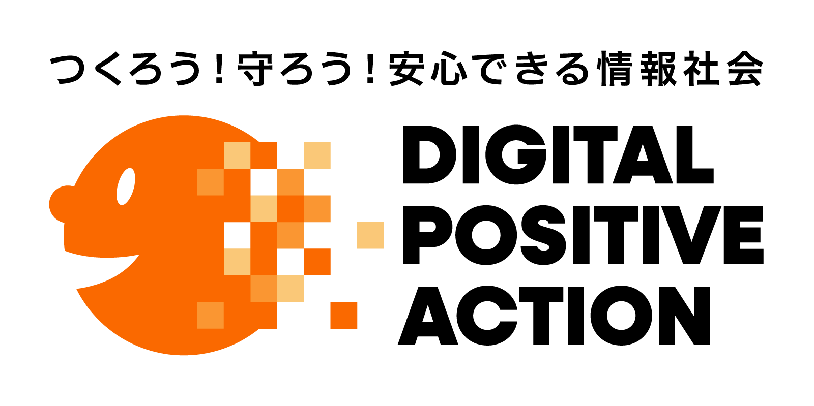
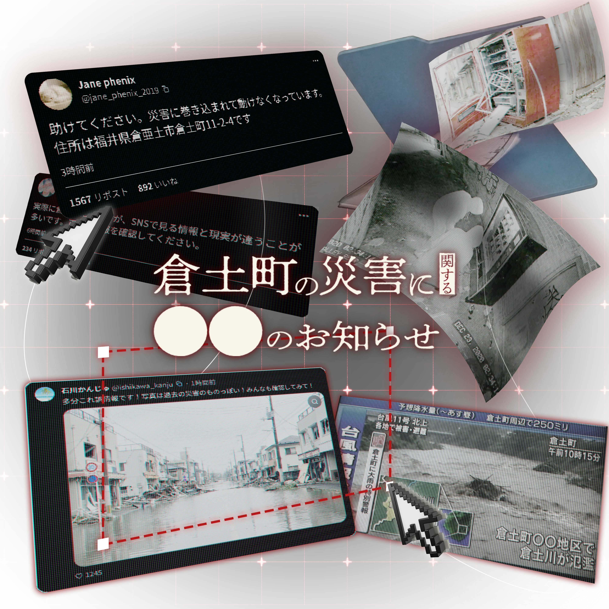
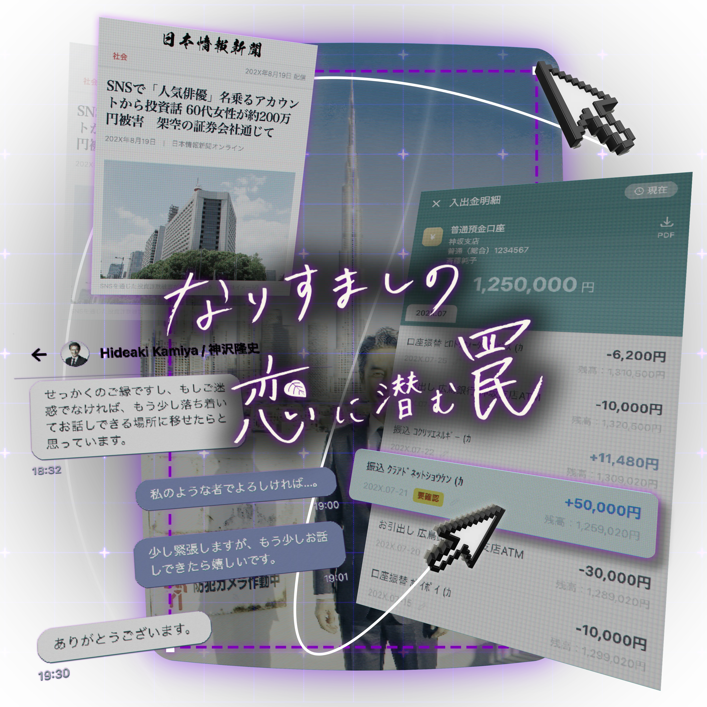
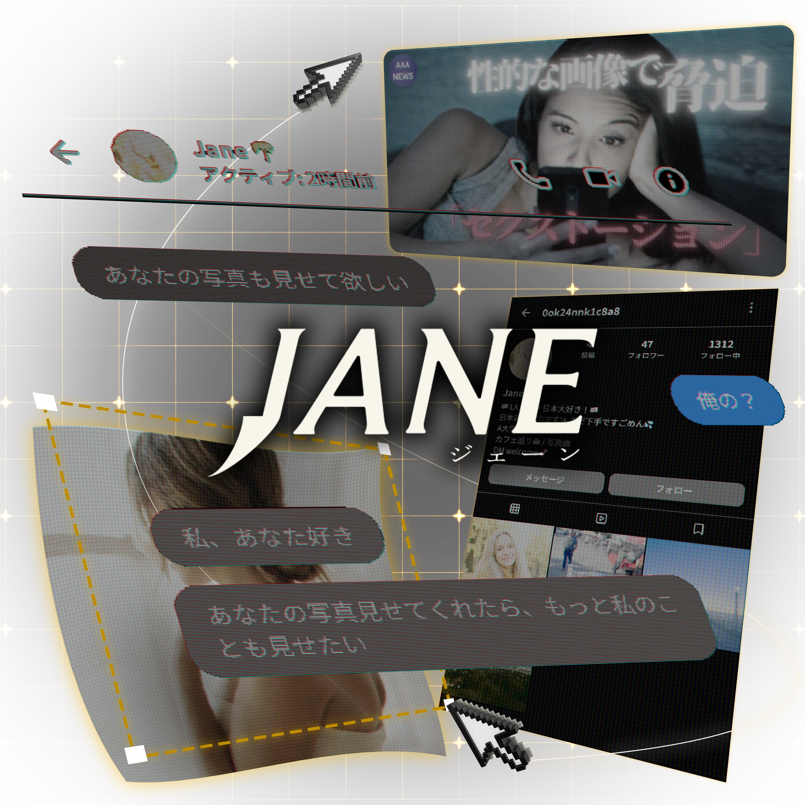
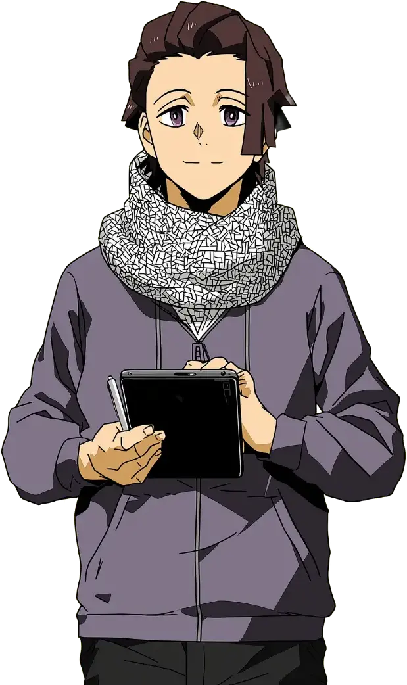

総務省では、SNS上の様々なリスクについて
ゲーム形式で体験しながら学べる教材を公開しています。

EP.01SNS上の災害情報は本当に正しい？情報を見極める力を学びます。

EP.02祖母がSNSで出会った「素敵な人」。詐欺の手口と対処法を学びます。

EP.03SNSで知り合った海外の女性からの脅迫。手口と対処法を学びます。

SNSには偽・誤情報、投資詐欺やロマンス詐欺、セクストーションなど様々なリスクが存在します。本教材は、危険を「体験」として理解することで、自ら判断し行動できる力を育みます。